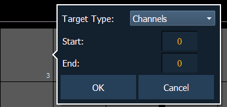
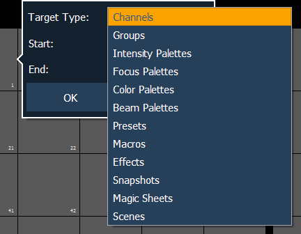

{Custom} allows you to select multiple targets to display in the same bank of direct selects.
After selecting {Custom} as the direct select type, the direct selects will first display as being empty. To assign a target to a direct select or multiple direct selects, you can either tap on a direct select to open the configuration window, or you can use the command line.

From the configuration window, you can select the target type, and the starting and ending target numbers, which allows you to assign a range of targets.

From the command line, you can select a range of targets that you want to assign, such as [Presets] [1] [Thru] [5] [Enter]. Then double click on a direct select to assign the selection.
Note: To assign a range of channels to the direct selects, you will need to use the configuration window. From the command line, you can only assign one channel at a time.
Scenes can be assigned to custom direct selects. To assign a scene to a direct select, you can either tap on a direct select to open the configuration window, or you can use the command line.
From the configuration window, you can select the target type of scene, and the scene number. Only one scene can be assigned at a time.
From the command line, you can select a scene, such as [Cue] [1] {Attributes} {Scene} [1] [Enter]. Then double click on a direct select to assign the selection.
You can clear a custom direct select by using the [Escape] key. Hold down the [Escape] key and then press the direct select that you want to clear. To clear a range of direct selects, hold down the [Escape] key and press the first direct select in the range until a red X appears on it. With [Escape] still held down, press the last direct select of the range.